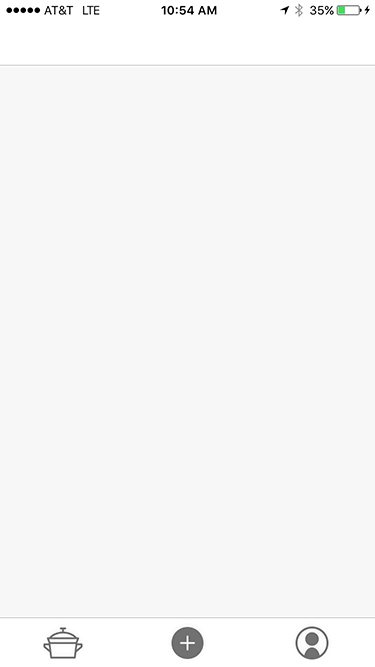
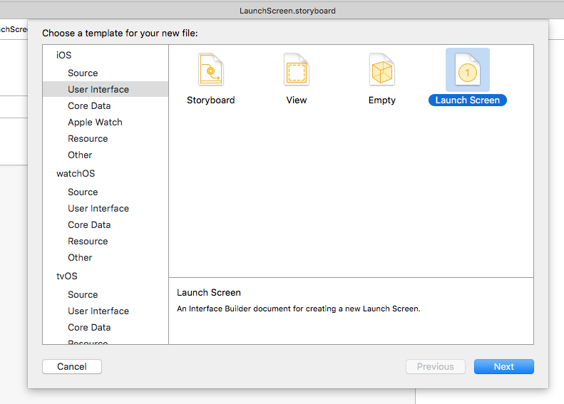
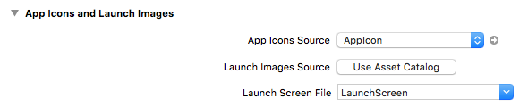
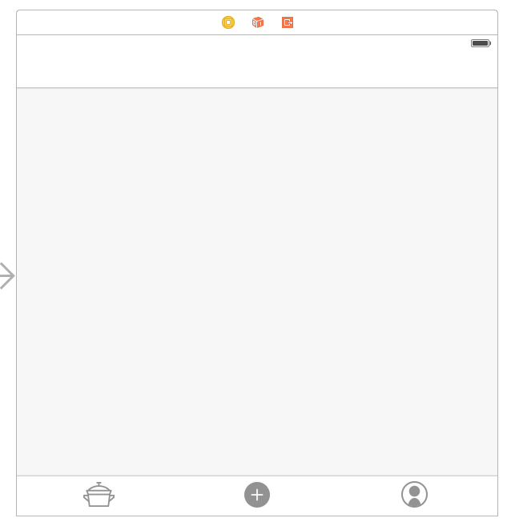

As we get closer to launching the (Not)Recipes app at Food52 there are a bunch of small details that need to be ironed out. One of these details is the launch screen that users first encounter when launching the app.
According to Apple, the launch screen should be something that fits this description: > Remember, the launch image doesn’t provide you with an opportunity for artistic expression. It’s solely intended to enhance the user’s perception of your app as quick to launch and immediately ready for use.
This means we should have an empty launch screen only showing the basic UI such as the tab bar and its icons and the nav bar. In our case it looks like this:

The easiest way to do this is to create a LaunchScreen.storyboard file by going to:

After that you’ll need to set the launch screen in the project settings here:

Following that it’s just a matter of adding a few dummy UI elements to the storyboard. Since we have a tab bar in our app, we added an empty tab bar and its items to the launch screen storyboard:

We also adjusted the height of the navigation bar to reflect what it will look like on launch. Remember to set the Auto Layout constraints on both the tab bar and nav bar in order to keep things looking good on all device sizes.